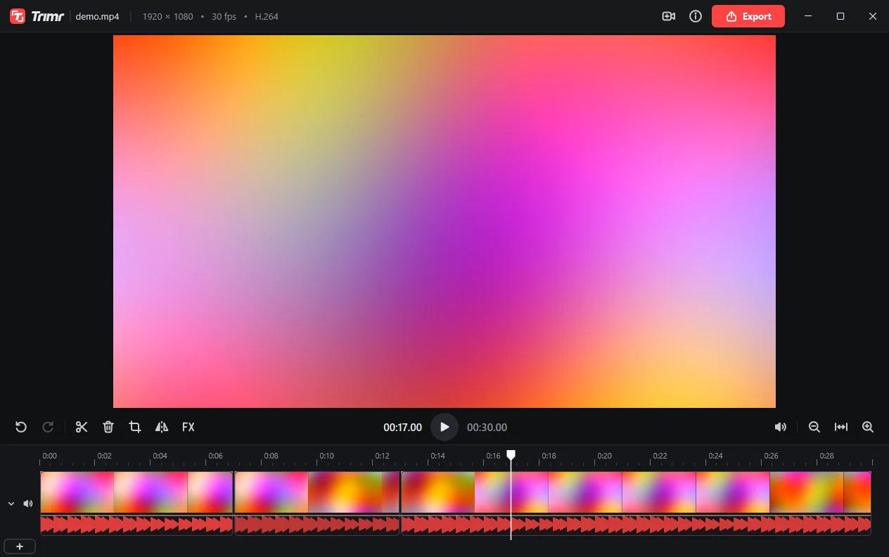

A tiny, fast video trimmer for Windows.
Cut, crop, join and layer clips, add music, and export at the source's quality. One small file, nothing to install.
Download for Windows
Everything a quick edit needs
Opens instantly
On screen in a blink, scrubbing and playback on your graphics card, and no CPU use while it sits idle.
Trim and split
Frame-exact cuts with S, Q and W. Delete a part and the gap closes by itself.
Crop and mirror
Any shape, or a preset: 16:9, 9:16, 1:1, 4:3, 4:5. Mirror one clip or the whole video.
Join and layer
Put videos end to end, or picture-in-picture and side by side, each with its own crop and sound.
Music and voice-over
Audio tracks under the video, each clip with its own volume. FX too: brightness, contrast, color.
Exports that match
Same resolution, frame rate, codec and bitrate as the original, saved right next to it.
Getting started
- Download Trimr.exe and open it
There's no installer: keep the file anywhere you like, such as your Desktop or Documents. Your browser may ask whether to keep it, since it's a new app; choose Keep.
- If Windows says "Windows protected your PC"
Trimr isn't signed by a big publisher, so Windows asks the first time. Click More info, then Run anyway.
- Add it to the right-click menu
Click Add Trimr to the right-click menu on its start screen, and every video gets Edit with Trimr. Windows asks for admin once. Then drop a video in, or press ? for the shortcuts.
Needs Windows 10 or 11 (64-bit). iPhone videos (HEVC) need Microsoft's HEVC Video Extensions from the Store; Trimr tells you if one is missing.